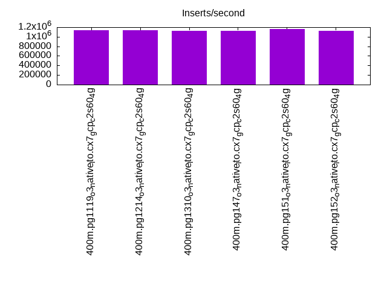
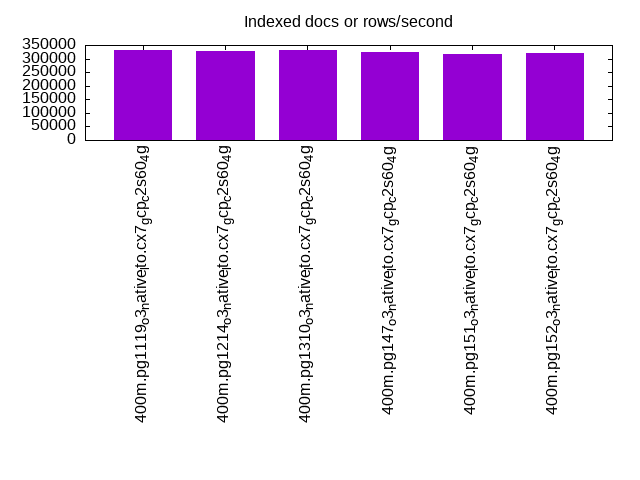
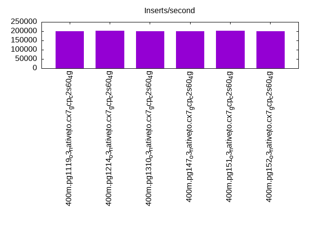
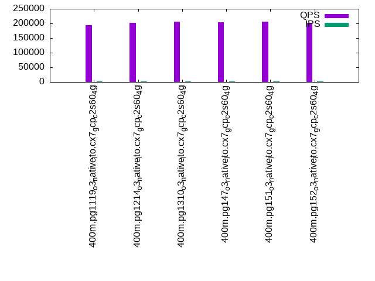
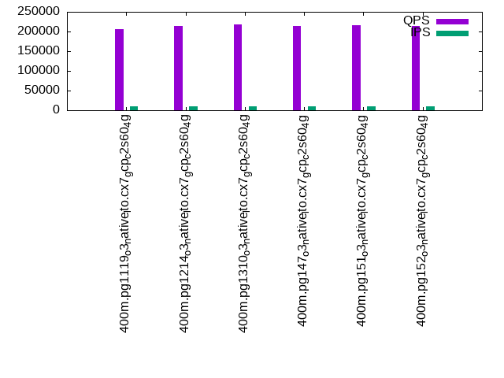
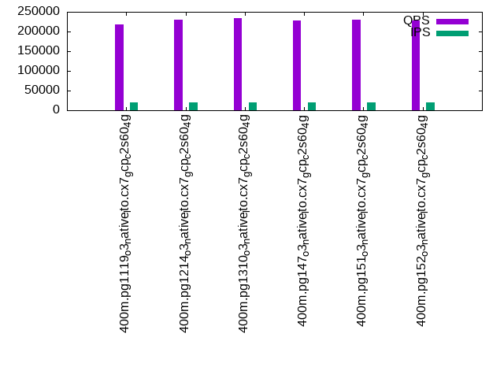

This is a report for the insert benchmark with 400M docs and 20 client(s). It is generated by scripts (bash, awk, sed) and Tufte might not be impressed. An overview of the insert benchmark is here and a short update is here. Below, by DBMS, I mean DBMS+version.config. An example is my8020.c10b40 where my means MySQL, 8020 is version 8.0.20 and c10b40 is the name for the configuration file.
The test server is c2-standard-60 from GCP with 30 cores, hyperthreads disabled, 240G RAM and 3T of NVMe (XFS with RAID0 over 8 devices). The benchmark was run with 20 clients and there were 1 or 2 connections per client (1 for queries, 1 for inserts). It uses 1 table. It loads 400M rows without secondary indexes, creates secondary indexes, loads another 400M rows per table then does 3 read+write tests for one hour each that do queries as fast as possible with 100, 500 and then 1000 writes/second/client concurrent with the queries. The database is cached by the OS but not by Postgres. Clients and the DBMS share one server. The per-database configs are in the per-database subdirectories here.
The tested DBMS are:
The numbers are inserts/s for l.i0 and l.i1, indexed docs (or rows) /s for l.x and queries/s for q*.2. The values are the average rate over the entire test for inserts (IPS) and queries (QPS). The range of values for IPS and QPS is split into 3 parts: bottom 25%, middle 50%, top 25%. Values in the bottom 25% have a red background, values in the top 25% have a green background and values in the middle have no color. A gray background is used for values that can be ignored because the DBMS did not sustain the target insert rate. Red backgrounds are not used when the minimum value is within 80% of the max value.
| dbms | l.i0 | l.x | l.i1 | q100.1 | q500.1 | q1000.1 |
|---|---|---|---|---|---|---|
| 400m.pg1119_o3_native_lto.cx7_gcp_c2s60_4g | 1142857 | 330116 | 201005 | 194505 | 206764 | 218869 |
| 400m.pg1214_o3_native_lto.cx7_gcp_c2s60_4g | 1136364 | 328220 | 203355 | 202223 | 213272 | 230173 |
| 400m.pg1310_o3_native_lto.cx7_gcp_c2s60_4g | 1126760 | 329843 | 199700 | 205454 | 218224 | 234039 |
| 400m.pg147_o3_native_lto.cx7_gcp_c2s60_4g | 1126760 | 325020 | 199005 | 204559 | 214898 | 227051 |
| 400m.pg151_o3_native_lto.cx7_gcp_c2s60_4g | 1162791 | 316535 | 202224 | 206718 | 216467 | 230002 |
| 400m.pg152_o3_native_lto.cx7_gcp_c2s60_4g | 1123596 | 319059 | 200803 | 202057 | 213310 | 227760 |
This table has relative throughput, throughput for the DBMS relative to the DBMS in the first line, using the absolute throughput from the previous table.
| dbms | l.i0 | l.x | l.i1 | q100.1 | q500.1 | q1000.1 |
|---|---|---|---|---|---|---|
| 400m.pg1119_o3_native_lto.cx7_gcp_c2s60_4g | 1.00 | 1.00 | 1.00 | 1.00 | 1.00 | 1.00 |
| 400m.pg1214_o3_native_lto.cx7_gcp_c2s60_4g | 0.99 | 0.99 | 1.01 | 1.04 | 1.03 | 1.05 |
| 400m.pg1310_o3_native_lto.cx7_gcp_c2s60_4g | 0.99 | 1.00 | 0.99 | 1.06 | 1.06 | 1.07 |
| 400m.pg147_o3_native_lto.cx7_gcp_c2s60_4g | 0.99 | 0.98 | 0.99 | 1.05 | 1.04 | 1.04 |
| 400m.pg151_o3_native_lto.cx7_gcp_c2s60_4g | 1.02 | 0.96 | 1.01 | 1.06 | 1.05 | 1.05 |
| 400m.pg152_o3_native_lto.cx7_gcp_c2s60_4g | 0.98 | 0.97 | 1.00 | 1.04 | 1.03 | 1.04 |
This lists the average rate of inserts/s for the tests that do inserts concurrent with queries. For such tests the query rate is listed in the table above. The read+write tests are setup so that the insert rate should match the target rate every second. Cells that are not at least 95% of the target have a red background to indicate a failure to satisfy the target.
| dbms | q100.1 | q500.1 | q1000.1 |
|---|---|---|---|
| pg1119_o3_native_lto.cx7_gcp_c2s60_4g | 1977 | 9885 | 19769 |
| pg1214_o3_native_lto.cx7_gcp_c2s60_4g | 1976 | 9885 | 19769 |
| pg1310_o3_native_lto.cx7_gcp_c2s60_4g | 1976 | 9885 | 19769 |
| pg147_o3_native_lto.cx7_gcp_c2s60_4g | 1977 | 9885 | 19769 |
| pg151_o3_native_lto.cx7_gcp_c2s60_4g | 1976 | 9885 | 19769 |
| pg152_o3_native_lto.cx7_gcp_c2s60_4g | 1976 | 9885 | 19769 |
| target | 2000 | 10000 | 20000 |
l.i0: load without secondary indexes. Graphs for performance per 1-second interval are here.
Average throughput:
Insert response time histogram: each cell has the percentage of responses that take <= the time in the header and max is the max response time in seconds. For the max column values in the top 25% of the range have a red background and in the bottom 25% of the range have a green background. The red background is not used when the min value is within 80% of the max value.
| dbms | 256us | 1ms | 4ms | 16ms | 64ms | 256ms | 1s | 4s | 16s | gt | max |
|---|---|---|---|---|---|---|---|---|---|---|---|
| pg1119_o3_native_lto.cx7_gcp_c2s60_4g | 26.463 | 70.867 | 2.614 | 0.022 | 0.027 | 0.007 | 0.928 | ||||
| pg1214_o3_native_lto.cx7_gcp_c2s60_4g | 25.153 | 72.067 | 2.724 | 0.020 | 0.028 | 0.008 | 0.703 | ||||
| pg1310_o3_native_lto.cx7_gcp_c2s60_4g | 27.756 | 69.241 | 2.943 | 0.021 | 0.029 | 0.010 | 0.628 | ||||
| pg147_o3_native_lto.cx7_gcp_c2s60_4g | 25.136 | 72.164 | 2.635 | 0.024 | 0.034 | 0.006 | 0.926 | ||||
| pg151_o3_native_lto.cx7_gcp_c2s60_4g | 31.368 | 66.117 | 2.463 | 0.019 | 0.025 | 0.008 | 0.366 | ||||
| pg152_o3_native_lto.cx7_gcp_c2s60_4g | 26.926 | 70.268 | 2.749 | 0.019 | 0.030 | 0.009 | 0.641 |
Performance metrics for the DBMS listed above. Some are normalized by throughput, others are not. Legend for results is here.
ips qps rps rmbps wps wmbps rpq rkbpq wpi wkbpi csps cpups cspq cpupq dbgb1 dbgb2 rss maxop p50 p99 tag 1142857 0 0 0.0 2367.1 463.3 0.000 0.000 0.002 0.415 352090 58.9 0.308 15 44.2 114.2 NA 0.928 62658 26582 400m.pg1119_o3_native_lto.cx7_gcp_c2s60_4g 1136364 0 0 0.0 2542.1 458.0 0.000 0.000 0.002 0.413 316397 58.8 0.278 16 43.0 112.3 0.0 0.703 62232 21876 400m.pg1214_o3_native_lto.cx7_gcp_c2s60_4g 1126760 0 0 0.0 2212.8 465.5 0.000 0.000 0.002 0.423 334683 57.6 0.297 15 43.0 112.5 NA 0.628 61932 19878 400m.pg1310_o3_native_lto.cx7_gcp_c2s60_4g 1126760 0 0 0.0 2267.2 465.1 0.000 0.000 0.002 0.423 324191 57.9 0.288 15 43.0 112.3 NA 0.926 62132 22476 400m.pg147_o3_native_lto.cx7_gcp_c2s60_4g 1162791 0 0 0.0 2311.7 463.6 0.000 0.000 0.002 0.408 324905 58.7 0.279 15 43.0 112.4 0.0 0.366 63827 13885 400m.pg151_o3_native_lto.cx7_gcp_c2s60_4g 1123596 0 0 0.0 2281.2 466.4 0.000 0.000 0.002 0.425 326517 57.7 0.291 15 43.0 112.4 NA 0.641 61858 17680 400m.pg152_o3_native_lto.cx7_gcp_c2s60_4g
l.x: create secondary indexes.
Average throughput:
Performance metrics for the DBMS listed above. Some are normalized by throughput, others are not. Legend for results is here.
ips qps rps rmbps wps wmbps rpq rkbpq wpi wkbpi csps cpups cspq cpupq dbgb1 dbgb2 rss maxop p50 p99 tag 330116 0 0 0.0 584.1 129.7 0.000 0.000 0.002 0.402 1606 3.3 0.005 3 79.5 156.0 0.0 0.002 NA NA 400m.pg1119_o3_native_lto.cx7_gcp_c2s60_4g 328220 0 0 0.0 626.0 131.5 0.000 0.000 0.002 0.410 1630 3.2 0.005 3 78.3 154.4 0.0 0.002 NA NA 400m.pg1214_o3_native_lto.cx7_gcp_c2s60_4g 329843 0 0 0.0 508.6 125.9 0.000 0.000 0.002 0.391 1792 3.2 0.005 3 78.3 152.0 0.0 0.002 NA NA 400m.pg1310_o3_native_lto.cx7_gcp_c2s60_4g 325020 0 0 0.0 532.5 135.2 0.000 0.000 0.002 0.426 1914 3.2 0.006 3 78.3 163.9 0.0 0.002 NA NA 400m.pg147_o3_native_lto.cx7_gcp_c2s60_4g 316535 0 0 0.0 561.7 128.6 0.000 0.000 0.002 0.416 2088 3.2 0.007 3 78.3 164.9 0.0 0.002 NA NA 400m.pg151_o3_native_lto.cx7_gcp_c2s60_4g 319059 0 0 0.0 570.1 135.2 0.000 0.000 0.002 0.434 2715 3.2 0.009 3 78.3 164.0 0.0 0.002 NA NA 400m.pg152_o3_native_lto.cx7_gcp_c2s60_4g
l.i1: continue load after secondary indexes created. Graphs for performance per 1-second interval are here.
Average throughput:
Insert response time histogram: each cell has the percentage of responses that take <= the time in the header and max is the max response time in seconds. For the max column values in the top 25% of the range have a red background and in the bottom 25% of the range have a green background. The red background is not used when the min value is within 80% of the max value.
| dbms | 256us | 1ms | 4ms | 16ms | 64ms | 256ms | 1s | 4s | 16s | gt | max |
|---|---|---|---|---|---|---|---|---|---|---|---|
| pg1119_o3_native_lto.cx7_gcp_c2s60_4g | 86.064 | 10.693 | 2.521 | 0.706 | 0.016 | 0.539 | |||||
| pg1214_o3_native_lto.cx7_gcp_c2s60_4g | 86.100 | 10.716 | 2.509 | 0.653 | 0.022 | 0.598 | |||||
| pg1310_o3_native_lto.cx7_gcp_c2s60_4g | 85.987 | 10.674 | 2.617 | 0.699 | 0.023 | 0.701 | |||||
| pg147_o3_native_lto.cx7_gcp_c2s60_4g | 86.827 | 9.916 | 2.494 | 0.737 | 0.027 | 0.578 | |||||
| pg151_o3_native_lto.cx7_gcp_c2s60_4g | 87.176 | 9.691 | 2.396 | 0.711 | 0.026 | 0.648 | |||||
| pg152_o3_native_lto.cx7_gcp_c2s60_4g | 86.729 | 10.122 | 2.400 | 0.720 | 0.029 | 0.753 |
Performance metrics for the DBMS listed above. Some are normalized by throughput, others are not. Legend for results is here.
ips qps rps rmbps wps wmbps rpq rkbpq wpi wkbpi csps cpups cspq cpupq dbgb1 dbgb2 rss maxop p50 p99 tag 201005 0 3 0.0 40629.9 1276.5 0.000 0.000 0.202 6.503 189505 43.7 0.943 65 176.4 271.5 0.0 0.539 10691 1099 400m.pg1119_o3_native_lto.cx7_gcp_c2s60_4g 203355 0 1 0.0 40237.6 1271.2 0.000 0.000 0.198 6.401 191732 43.7 0.943 64 170.2 264.8 0.0 0.598 10988 1199 400m.pg1214_o3_native_lto.cx7_gcp_c2s60_4g 199700 0 0 0.0 41267.0 1278.4 0.000 0.000 0.207 6.555 199420 42.8 0.999 64 170.2 266.1 NA 0.701 10788 1099 400m.pg1310_o3_native_lto.cx7_gcp_c2s60_4g 199005 0 0 0.0 41456.6 1280.2 0.000 0.000 0.208 6.588 186577 42.7 0.938 64 170.2 286.8 NA 0.578 10688 1199 400m.pg147_o3_native_lto.cx7_gcp_c2s60_4g 202224 0 0 0.0 40306.4 1272.0 0.000 0.000 0.199 6.441 191698 43.0 0.948 64 170.2 287.1 NA 0.648 10838 1199 400m.pg151_o3_native_lto.cx7_gcp_c2s60_4g 200803 0 0 0.0 41023.9 1275.9 0.000 0.000 0.204 6.506 190978 43.0 0.951 64 170.2 286.2 NA 0.753 10693 999 400m.pg152_o3_native_lto.cx7_gcp_c2s60_4g
q100.1: range queries with 100 insert/s per client. Graphs for performance per 1-second interval are here.
Average throughput:
Query response time histogram: each cell has the percentage of responses that take <= the time in the header and max is the max response time in seconds. For max values in the top 25% of the range have a red background and in the bottom 25% of the range have a green background. The red background is not used when the min value is within 80% of the max value.
| dbms | 256us | 1ms | 4ms | 16ms | 64ms | 256ms | 1s | 4s | 16s | gt | max |
|---|---|---|---|---|---|---|---|---|---|---|---|
| pg1119_o3_native_lto.cx7_gcp_c2s60_4g | 99.973 | 0.020 | 0.006 | 0.001 | nonzero | 0.020 | |||||
| pg1214_o3_native_lto.cx7_gcp_c2s60_4g | 99.976 | 0.017 | 0.006 | 0.001 | 0.015 | ||||||
| pg1310_o3_native_lto.cx7_gcp_c2s60_4g | 99.978 | 0.015 | 0.006 | 0.001 | nonzero | 0.024 | |||||
| pg147_o3_native_lto.cx7_gcp_c2s60_4g | 99.977 | 0.016 | 0.006 | 0.001 | nonzero | 0.024 | |||||
| pg151_o3_native_lto.cx7_gcp_c2s60_4g | 99.978 | 0.015 | 0.006 | 0.001 | nonzero | 0.024 | |||||
| pg152_o3_native_lto.cx7_gcp_c2s60_4g | 99.976 | 0.017 | 0.006 | 0.001 | nonzero | 0.024 |
Insert response time histogram: each cell has the percentage of responses that take <= the time in the header and max is the max response time in seconds. For max values in the top 25% of the range have a red background and in the bottom 25% of the range have a green background. The red background is not used when the min value is within 80% of the max value.
| dbms | 256us | 1ms | 4ms | 16ms | 64ms | 256ms | 1s | 4s | 16s | gt | max |
|---|---|---|---|---|---|---|---|---|---|---|---|
| pg1119_o3_native_lto.cx7_gcp_c2s60_4g | 97.579 | 2.285 | 0.136 | 0.034 | |||||||
| pg1214_o3_native_lto.cx7_gcp_c2s60_4g | 97.144 | 2.581 | 0.275 | 0.039 | |||||||
| pg1310_o3_native_lto.cx7_gcp_c2s60_4g | 97.276 | 2.454 | 0.243 | 0.022 | 0.004 | 0.262 | |||||
| pg147_o3_native_lto.cx7_gcp_c2s60_4g | 97.024 | 2.647 | 0.310 | 0.018 | 0.001 | 0.301 | |||||
| pg151_o3_native_lto.cx7_gcp_c2s60_4g | 98.401 | 1.499 | 0.088 | 0.001 | 0.011 | 0.318 | |||||
| pg152_o3_native_lto.cx7_gcp_c2s60_4g | 98.381 | 1.511 | 0.096 | 0.013 | 0.197 |
Performance metrics for the DBMS listed above. Some are normalized by throughput, others are not. Legend for results is here.
ips qps rps rmbps wps wmbps rpq rkbpq wpi wkbpi csps cpups cspq cpupq dbgb1 dbgb2 rss maxop p50 p99 tag 1977 194505 0 0.0 4026.4 50.4 0.000 0.000 2.037 26.112 695977 62.9 3.578 97 177.6 241.0 0.0 0.020 9577 9238 400m.pg1119_o3_native_lto.cx7_gcp_c2s60_4g 1976 202223 0 0.0 3960.4 50.0 0.000 0.000 2.004 25.895 721374 62.5 3.567 93 171.1 234.5 0.0 0.015 10025 9689 400m.pg1214_o3_native_lto.cx7_gcp_c2s60_4g 1976 205454 1 0.0 3981.2 52.0 0.000 0.000 2.015 26.947 732835 62.6 3.567 91 171.1 232.9 0.0 0.024 10197 9865 400m.pg1310_o3_native_lto.cx7_gcp_c2s60_4g 1977 204559 3 0.0 4024.6 52.0 0.000 0.000 2.036 26.954 728605 62.6 3.562 92 171.1 267.4 0.0 0.024 10121 9781 400m.pg147_o3_native_lto.cx7_gcp_c2s60_4g 1976 206718 2 0.0 4032.1 52.1 0.000 0.000 2.041 27.013 737779 62.5 3.569 91 171.1 267.8 0.0 0.024 10197 9866 400m.pg151_o3_native_lto.cx7_gcp_c2s60_4g 1976 202057 2 0.0 4022.1 51.5 0.000 0.000 2.036 26.717 721671 62.4 3.572 93 171.1 264.9 0.0 0.024 10069 9717 400m.pg152_o3_native_lto.cx7_gcp_c2s60_4g
q500.1: range queries with 500 insert/s per client. Graphs for performance per 1-second interval are here.
Average throughput:
Query response time histogram: each cell has the percentage of responses that take <= the time in the header and max is the max response time in seconds. For max values in the top 25% of the range have a red background and in the bottom 25% of the range have a green background. The red background is not used when the min value is within 80% of the max value.
| dbms | 256us | 1ms | 4ms | 16ms | 64ms | 256ms | 1s | 4s | 16s | gt | max |
|---|---|---|---|---|---|---|---|---|---|---|---|
| pg1119_o3_native_lto.cx7_gcp_c2s60_4g | 99.875 | 0.091 | 0.031 | 0.002 | nonzero | 0.030 | |||||
| pg1214_o3_native_lto.cx7_gcp_c2s60_4g | 99.882 | 0.086 | 0.030 | 0.002 | nonzero | 0.025 | |||||
| pg1310_o3_native_lto.cx7_gcp_c2s60_4g | 99.889 | 0.080 | 0.029 | 0.002 | nonzero | 0.028 | |||||
| pg147_o3_native_lto.cx7_gcp_c2s60_4g | 99.887 | 0.082 | 0.030 | 0.002 | nonzero | 0.026 | |||||
| pg151_o3_native_lto.cx7_gcp_c2s60_4g | 99.889 | 0.080 | 0.029 | 0.002 | nonzero | 0.027 | |||||
| pg152_o3_native_lto.cx7_gcp_c2s60_4g | 99.883 | 0.085 | 0.030 | 0.002 | nonzero | nonzero | 0.270 |
Insert response time histogram: each cell has the percentage of responses that take <= the time in the header and max is the max response time in seconds. For max values in the top 25% of the range have a red background and in the bottom 25% of the range have a green background. The red background is not used when the min value is within 80% of the max value.
| dbms | 256us | 1ms | 4ms | 16ms | 64ms | 256ms | 1s | 4s | 16s | gt | max |
|---|---|---|---|---|---|---|---|---|---|---|---|
| pg1119_o3_native_lto.cx7_gcp_c2s60_4g | 43.791 | 42.053 | 14.114 | 0.042 | 0.103 | ||||||
| pg1214_o3_native_lto.cx7_gcp_c2s60_4g | 44.242 | 40.729 | 14.982 | 0.048 | 0.110 | ||||||
| pg1310_o3_native_lto.cx7_gcp_c2s60_4g | 45.588 | 41.146 | 13.226 | 0.041 | 0.112 | ||||||
| pg147_o3_native_lto.cx7_gcp_c2s60_4g | 45.481 | 39.909 | 14.539 | 0.071 | 0.195 | ||||||
| pg151_o3_native_lto.cx7_gcp_c2s60_4g | 44.827 | 40.126 | 14.984 | 0.063 | 0.251 | ||||||
| pg152_o3_native_lto.cx7_gcp_c2s60_4g | 45.261 | 40.270 | 14.412 | 0.057 | 0.001 | 0.377 |
Performance metrics for the DBMS listed above. Some are normalized by throughput, others are not. Legend for results is here.
ips qps rps rmbps wps wmbps rpq rkbpq wpi wkbpi csps cpups cspq cpupq dbgb1 dbgb2 rss maxop p50 p99 tag 9885 206764 0 0.0 19898.2 225.0 0.000 0.000 2.013 23.307 696975 64.7 3.371 94 183.7 234.1 0.0 0.030 10213 9398 400m.pg1119_o3_native_lto.cx7_gcp_c2s60_4g 9885 213272 0 0.0 19522.7 223.2 0.000 0.000 1.975 23.122 720320 64.3 3.377 90 176.0 227.8 0.0 0.025 10393 9573 400m.pg1214_o3_native_lto.cx7_gcp_c2s60_4g 9885 218224 0 0.0 19537.3 222.4 0.000 0.000 1.977 23.044 734992 64.3 3.368 88 176.0 227.5 0.0 0.028 10724 9813 400m.pg1310_o3_native_lto.cx7_gcp_c2s60_4g 9885 214898 0 0.0 19524.0 222.8 0.000 0.000 1.975 23.082 726181 64.4 3.379 90 176.0 247.1 0.0 0.026 10580 9749 400m.pg147_o3_native_lto.cx7_gcp_c2s60_4g 9885 216467 0 0.0 19518.5 222.8 0.000 0.000 1.975 23.078 731604 64.3 3.380 89 176.0 247.4 0.0 0.027 10532 9738 400m.pg151_o3_native_lto.cx7_gcp_c2s60_4g 9885 213310 0 0.0 19516.3 222.5 0.000 0.000 1.974 23.055 721165 64.3 3.381 90 176.0 244.5 0.0 0.270 10357 9526 400m.pg152_o3_native_lto.cx7_gcp_c2s60_4g
q1000.1: range queries with 1000 insert/s per client. Graphs for performance per 1-second interval are here.
Average throughput:
Query response time histogram: each cell has the percentage of responses that take <= the time in the header and max is the max response time in seconds. For max values in the top 25% of the range have a red background and in the bottom 25% of the range have a green background. The red background is not used when the min value is within 80% of the max value.
| dbms | 256us | 1ms | 4ms | 16ms | 64ms | 256ms | 1s | 4s | 16s | gt | max |
|---|---|---|---|---|---|---|---|---|---|---|---|
| pg1119_o3_native_lto.cx7_gcp_c2s60_4g | 99.764 | 0.184 | 0.049 | 0.003 | nonzero | nonzero | 0.238 | ||||
| pg1214_o3_native_lto.cx7_gcp_c2s60_4g | 99.775 | 0.175 | 0.047 | 0.003 | nonzero | nonzero | 0.086 | ||||
| pg1310_o3_native_lto.cx7_gcp_c2s60_4g | 99.782 | 0.170 | 0.045 | 0.003 | nonzero | 0.063 | |||||
| pg147_o3_native_lto.cx7_gcp_c2s60_4g | 99.795 | 0.159 | 0.043 | 0.003 | nonzero | 0.048 | |||||
| pg151_o3_native_lto.cx7_gcp_c2s60_4g | 99.783 | 0.169 | 0.045 | 0.003 | nonzero | 0.050 | |||||
| pg152_o3_native_lto.cx7_gcp_c2s60_4g | 99.774 | 0.178 | 0.046 | 0.003 | nonzero | nonzero | 0.090 |
Insert response time histogram: each cell has the percentage of responses that take <= the time in the header and max is the max response time in seconds. For max values in the top 25% of the range have a red background and in the bottom 25% of the range have a green background. The red background is not used when the min value is within 80% of the max value.
| dbms | 256us | 1ms | 4ms | 16ms | 64ms | 256ms | 1s | 4s | 16s | gt | max |
|---|---|---|---|---|---|---|---|---|---|---|---|
| pg1119_o3_native_lto.cx7_gcp_c2s60_4g | 43.240 | 45.290 | 11.068 | 0.399 | 0.003 | 0.344 | |||||
| pg1214_o3_native_lto.cx7_gcp_c2s60_4g | 41.861 | 45.717 | 11.959 | 0.463 | 0.255 | ||||||
| pg1310_o3_native_lto.cx7_gcp_c2s60_4g | 42.713 | 45.769 | 11.218 | 0.300 | 0.239 | ||||||
| pg147_o3_native_lto.cx7_gcp_c2s60_4g | 52.271 | 40.361 | 7.138 | 0.230 | 0.244 | ||||||
| pg151_o3_native_lto.cx7_gcp_c2s60_4g | 44.460 | 46.598 | 8.746 | 0.195 | 0.217 | ||||||
| pg152_o3_native_lto.cx7_gcp_c2s60_4g | 45.136 | 46.153 | 8.538 | 0.171 | 0.002 | 0.303 |
Performance metrics for the DBMS listed above. Some are normalized by throughput, others are not. Legend for results is here.
ips qps rps rmbps wps wmbps rpq rkbpq wpi wkbpi csps cpups cspq cpupq dbgb1 dbgb2 rss maxop p50 p99 tag 19769 218869 0 0.0 38608.9 408.3 0.000 0.000 1.953 21.148 692307 66.8 3.163 92 197.2 256.5 0.0 0.238 10757 9429 400m.pg1119_o3_native_lto.cx7_gcp_c2s60_4g 19769 230173 0 0.0 38107.5 408.8 0.000 0.000 1.928 21.172 726584 66.5 3.157 87 189.4 250.0 0.0 0.086 11315 9781 400m.pg1214_o3_native_lto.cx7_gcp_c2s60_4g 19769 234039 0 0.0 38234.1 407.8 0.000 0.000 1.934 21.121 735799 66.6 3.144 85 189.4 250.0 0.0 0.063 11417 9957 400m.pg1310_o3_native_lto.cx7_gcp_c2s60_4g 19769 227051 0 0.0 38159.4 392.1 0.000 0.000 1.930 20.308 721965 66.5 3.180 88 189.5 261.4 0.0 0.048 11089 9717 400m.pg147_o3_native_lto.cx7_gcp_c2s60_4g 19769 230002 0 0.0 38217.0 393.9 0.000 0.000 1.933 20.402 730673 66.4 3.177 87 189.4 261.4 0.0 0.050 11268 9861 400m.pg151_o3_native_lto.cx7_gcp_c2s60_4g 19769 227760 0 0.0 38165.5 394.5 0.000 0.000 1.931 20.432 720749 66.4 3.165 87 189.4 261.3 0.0 0.090 11301 9802 400m.pg152_o3_native_lto.cx7_gcp_c2s60_4g
l.i0: load without secondary indexes
Performance metrics for all DBMS, not just the ones listed above. Some are normalized by throughput, others are not. Legend for results is here.
ips qps rps rmbps wps wmbps rpq rkbpq wpi wkbpi csps cpups cspq cpupq dbgb1 dbgb2 rss maxop p50 p99 tag 1142857 0 0 0.0 2367.1 463.3 0.000 0.000 0.002 0.415 352090 58.9 0.308 15 44.2 114.2 NA 0.928 62658 26582 400m.pg1119_o3_native_lto.cx7_gcp_c2s60_4g 1136364 0 0 0.0 2542.1 458.0 0.000 0.000 0.002 0.413 316397 58.8 0.278 16 43.0 112.3 0.0 0.703 62232 21876 400m.pg1214_o3_native_lto.cx7_gcp_c2s60_4g 1126760 0 0 0.0 2212.8 465.5 0.000 0.000 0.002 0.423 334683 57.6 0.297 15 43.0 112.5 NA 0.628 61932 19878 400m.pg1310_o3_native_lto.cx7_gcp_c2s60_4g 1126760 0 0 0.0 2267.2 465.1 0.000 0.000 0.002 0.423 324191 57.9 0.288 15 43.0 112.3 NA 0.926 62132 22476 400m.pg147_o3_native_lto.cx7_gcp_c2s60_4g 1162791 0 0 0.0 2311.7 463.6 0.000 0.000 0.002 0.408 324905 58.7 0.279 15 43.0 112.4 0.0 0.366 63827 13885 400m.pg151_o3_native_lto.cx7_gcp_c2s60_4g 1123596 0 0 0.0 2281.2 466.4 0.000 0.000 0.002 0.425 326517 57.7 0.291 15 43.0 112.4 NA 0.641 61858 17680 400m.pg152_o3_native_lto.cx7_gcp_c2s60_4g
l.x: create secondary indexes
Performance metrics for all DBMS, not just the ones listed above. Some are normalized by throughput, others are not. Legend for results is here.
ips qps rps rmbps wps wmbps rpq rkbpq wpi wkbpi csps cpups cspq cpupq dbgb1 dbgb2 rss maxop p50 p99 tag 330116 0 0 0.0 584.1 129.7 0.000 0.000 0.002 0.402 1606 3.3 0.005 3 79.5 156.0 0.0 0.002 NA NA 400m.pg1119_o3_native_lto.cx7_gcp_c2s60_4g 328220 0 0 0.0 626.0 131.5 0.000 0.000 0.002 0.410 1630 3.2 0.005 3 78.3 154.4 0.0 0.002 NA NA 400m.pg1214_o3_native_lto.cx7_gcp_c2s60_4g 329843 0 0 0.0 508.6 125.9 0.000 0.000 0.002 0.391 1792 3.2 0.005 3 78.3 152.0 0.0 0.002 NA NA 400m.pg1310_o3_native_lto.cx7_gcp_c2s60_4g 325020 0 0 0.0 532.5 135.2 0.000 0.000 0.002 0.426 1914 3.2 0.006 3 78.3 163.9 0.0 0.002 NA NA 400m.pg147_o3_native_lto.cx7_gcp_c2s60_4g 316535 0 0 0.0 561.7 128.6 0.000 0.000 0.002 0.416 2088 3.2 0.007 3 78.3 164.9 0.0 0.002 NA NA 400m.pg151_o3_native_lto.cx7_gcp_c2s60_4g 319059 0 0 0.0 570.1 135.2 0.000 0.000 0.002 0.434 2715 3.2 0.009 3 78.3 164.0 0.0 0.002 NA NA 400m.pg152_o3_native_lto.cx7_gcp_c2s60_4g
l.i1: continue load after secondary indexes created
Performance metrics for all DBMS, not just the ones listed above. Some are normalized by throughput, others are not. Legend for results is here.
ips qps rps rmbps wps wmbps rpq rkbpq wpi wkbpi csps cpups cspq cpupq dbgb1 dbgb2 rss maxop p50 p99 tag 201005 0 3 0.0 40629.9 1276.5 0.000 0.000 0.202 6.503 189505 43.7 0.943 65 176.4 271.5 0.0 0.539 10691 1099 400m.pg1119_o3_native_lto.cx7_gcp_c2s60_4g 203355 0 1 0.0 40237.6 1271.2 0.000 0.000 0.198 6.401 191732 43.7 0.943 64 170.2 264.8 0.0 0.598 10988 1199 400m.pg1214_o3_native_lto.cx7_gcp_c2s60_4g 199700 0 0 0.0 41267.0 1278.4 0.000 0.000 0.207 6.555 199420 42.8 0.999 64 170.2 266.1 NA 0.701 10788 1099 400m.pg1310_o3_native_lto.cx7_gcp_c2s60_4g 199005 0 0 0.0 41456.6 1280.2 0.000 0.000 0.208 6.588 186577 42.7 0.938 64 170.2 286.8 NA 0.578 10688 1199 400m.pg147_o3_native_lto.cx7_gcp_c2s60_4g 202224 0 0 0.0 40306.4 1272.0 0.000 0.000 0.199 6.441 191698 43.0 0.948 64 170.2 287.1 NA 0.648 10838 1199 400m.pg151_o3_native_lto.cx7_gcp_c2s60_4g 200803 0 0 0.0 41023.9 1275.9 0.000 0.000 0.204 6.506 190978 43.0 0.951 64 170.2 286.2 NA 0.753 10693 999 400m.pg152_o3_native_lto.cx7_gcp_c2s60_4g
q100.1: range queries with 100 insert/s per client
Performance metrics for all DBMS, not just the ones listed above. Some are normalized by throughput, others are not. Legend for results is here.
ips qps rps rmbps wps wmbps rpq rkbpq wpi wkbpi csps cpups cspq cpupq dbgb1 dbgb2 rss maxop p50 p99 tag 1977 194505 0 0.0 4026.4 50.4 0.000 0.000 2.037 26.112 695977 62.9 3.578 97 177.6 241.0 0.0 0.020 9577 9238 400m.pg1119_o3_native_lto.cx7_gcp_c2s60_4g 1976 202223 0 0.0 3960.4 50.0 0.000 0.000 2.004 25.895 721374 62.5 3.567 93 171.1 234.5 0.0 0.015 10025 9689 400m.pg1214_o3_native_lto.cx7_gcp_c2s60_4g 1976 205454 1 0.0 3981.2 52.0 0.000 0.000 2.015 26.947 732835 62.6 3.567 91 171.1 232.9 0.0 0.024 10197 9865 400m.pg1310_o3_native_lto.cx7_gcp_c2s60_4g 1977 204559 3 0.0 4024.6 52.0 0.000 0.000 2.036 26.954 728605 62.6 3.562 92 171.1 267.4 0.0 0.024 10121 9781 400m.pg147_o3_native_lto.cx7_gcp_c2s60_4g 1976 206718 2 0.0 4032.1 52.1 0.000 0.000 2.041 27.013 737779 62.5 3.569 91 171.1 267.8 0.0 0.024 10197 9866 400m.pg151_o3_native_lto.cx7_gcp_c2s60_4g 1976 202057 2 0.0 4022.1 51.5 0.000 0.000 2.036 26.717 721671 62.4 3.572 93 171.1 264.9 0.0 0.024 10069 9717 400m.pg152_o3_native_lto.cx7_gcp_c2s60_4g
q500.1: range queries with 500 insert/s per client
Performance metrics for all DBMS, not just the ones listed above. Some are normalized by throughput, others are not. Legend for results is here.
ips qps rps rmbps wps wmbps rpq rkbpq wpi wkbpi csps cpups cspq cpupq dbgb1 dbgb2 rss maxop p50 p99 tag 9885 206764 0 0.0 19898.2 225.0 0.000 0.000 2.013 23.307 696975 64.7 3.371 94 183.7 234.1 0.0 0.030 10213 9398 400m.pg1119_o3_native_lto.cx7_gcp_c2s60_4g 9885 213272 0 0.0 19522.7 223.2 0.000 0.000 1.975 23.122 720320 64.3 3.377 90 176.0 227.8 0.0 0.025 10393 9573 400m.pg1214_o3_native_lto.cx7_gcp_c2s60_4g 9885 218224 0 0.0 19537.3 222.4 0.000 0.000 1.977 23.044 734992 64.3 3.368 88 176.0 227.5 0.0 0.028 10724 9813 400m.pg1310_o3_native_lto.cx7_gcp_c2s60_4g 9885 214898 0 0.0 19524.0 222.8 0.000 0.000 1.975 23.082 726181 64.4 3.379 90 176.0 247.1 0.0 0.026 10580 9749 400m.pg147_o3_native_lto.cx7_gcp_c2s60_4g 9885 216467 0 0.0 19518.5 222.8 0.000 0.000 1.975 23.078 731604 64.3 3.380 89 176.0 247.4 0.0 0.027 10532 9738 400m.pg151_o3_native_lto.cx7_gcp_c2s60_4g 9885 213310 0 0.0 19516.3 222.5 0.000 0.000 1.974 23.055 721165 64.3 3.381 90 176.0 244.5 0.0 0.270 10357 9526 400m.pg152_o3_native_lto.cx7_gcp_c2s60_4g
q1000.1: range queries with 1000 insert/s per client
Performance metrics for all DBMS, not just the ones listed above. Some are normalized by throughput, others are not. Legend for results is here.
ips qps rps rmbps wps wmbps rpq rkbpq wpi wkbpi csps cpups cspq cpupq dbgb1 dbgb2 rss maxop p50 p99 tag 19769 218869 0 0.0 38608.9 408.3 0.000 0.000 1.953 21.148 692307 66.8 3.163 92 197.2 256.5 0.0 0.238 10757 9429 400m.pg1119_o3_native_lto.cx7_gcp_c2s60_4g 19769 230173 0 0.0 38107.5 408.8 0.000 0.000 1.928 21.172 726584 66.5 3.157 87 189.4 250.0 0.0 0.086 11315 9781 400m.pg1214_o3_native_lto.cx7_gcp_c2s60_4g 19769 234039 0 0.0 38234.1 407.8 0.000 0.000 1.934 21.121 735799 66.6 3.144 85 189.4 250.0 0.0 0.063 11417 9957 400m.pg1310_o3_native_lto.cx7_gcp_c2s60_4g 19769 227051 0 0.0 38159.4 392.1 0.000 0.000 1.930 20.308 721965 66.5 3.180 88 189.5 261.4 0.0 0.048 11089 9717 400m.pg147_o3_native_lto.cx7_gcp_c2s60_4g 19769 230002 0 0.0 38217.0 393.9 0.000 0.000 1.933 20.402 730673 66.4 3.177 87 189.4 261.4 0.0 0.050 11268 9861 400m.pg151_o3_native_lto.cx7_gcp_c2s60_4g 19769 227760 0 0.0 38165.5 394.5 0.000 0.000 1.931 20.432 720749 66.4 3.165 87 189.4 261.3 0.0 0.090 11301 9802 400m.pg152_o3_native_lto.cx7_gcp_c2s60_4g
Insert response time histogram
256us 1ms 4ms 16ms 64ms 256ms 1s 4s 16s gt max tag 0.000 26.463 70.867 2.614 0.022 0.027 0.007 0.000 0.000 0.000 0.928 pg1119_o3_native_lto.cx7_gcp_c2s60_4g 0.000 25.153 72.067 2.724 0.020 0.028 0.008 0.000 0.000 0.000 0.703 pg1214_o3_native_lto.cx7_gcp_c2s60_4g 0.000 27.756 69.241 2.943 0.021 0.029 0.010 0.000 0.000 0.000 0.628 pg1310_o3_native_lto.cx7_gcp_c2s60_4g 0.000 25.136 72.164 2.635 0.024 0.034 0.006 0.000 0.000 0.000 0.926 pg147_o3_native_lto.cx7_gcp_c2s60_4g 0.000 31.368 66.117 2.463 0.019 0.025 0.008 0.000 0.000 0.000 0.366 pg151_o3_native_lto.cx7_gcp_c2s60_4g 0.000 26.926 70.268 2.749 0.019 0.030 0.009 0.000 0.000 0.000 0.641 pg152_o3_native_lto.cx7_gcp_c2s60_4g
TODO - determine whether there is data for create index response time
Insert response time histogram
256us 1ms 4ms 16ms 64ms 256ms 1s 4s 16s gt max tag 0.000 0.000 86.064 10.693 2.521 0.706 0.016 0.000 0.000 0.000 0.539 pg1119_o3_native_lto.cx7_gcp_c2s60_4g 0.000 0.000 86.100 10.716 2.509 0.653 0.022 0.000 0.000 0.000 0.598 pg1214_o3_native_lto.cx7_gcp_c2s60_4g 0.000 0.000 85.987 10.674 2.617 0.699 0.023 0.000 0.000 0.000 0.701 pg1310_o3_native_lto.cx7_gcp_c2s60_4g 0.000 0.000 86.827 9.916 2.494 0.737 0.027 0.000 0.000 0.000 0.578 pg147_o3_native_lto.cx7_gcp_c2s60_4g 0.000 0.000 87.176 9.691 2.396 0.711 0.026 0.000 0.000 0.000 0.648 pg151_o3_native_lto.cx7_gcp_c2s60_4g 0.000 0.000 86.729 10.122 2.400 0.720 0.029 0.000 0.000 0.000 0.753 pg152_o3_native_lto.cx7_gcp_c2s60_4g
Query response time histogram
256us 1ms 4ms 16ms 64ms 256ms 1s 4s 16s gt max tag 99.973 0.020 0.006 0.001 nonzero 0.000 0.000 0.000 0.000 0.000 0.020 pg1119_o3_native_lto.cx7_gcp_c2s60_4g 99.976 0.017 0.006 0.001 0.000 0.000 0.000 0.000 0.000 0.000 0.015 pg1214_o3_native_lto.cx7_gcp_c2s60_4g 99.978 0.015 0.006 0.001 nonzero 0.000 0.000 0.000 0.000 0.000 0.024 pg1310_o3_native_lto.cx7_gcp_c2s60_4g 99.977 0.016 0.006 0.001 nonzero 0.000 0.000 0.000 0.000 0.000 0.024 pg147_o3_native_lto.cx7_gcp_c2s60_4g 99.978 0.015 0.006 0.001 nonzero 0.000 0.000 0.000 0.000 0.000 0.024 pg151_o3_native_lto.cx7_gcp_c2s60_4g 99.976 0.017 0.006 0.001 nonzero 0.000 0.000 0.000 0.000 0.000 0.024 pg152_o3_native_lto.cx7_gcp_c2s60_4g
Insert response time histogram
256us 1ms 4ms 16ms 64ms 256ms 1s 4s 16s gt max tag 0.000 0.000 97.579 2.285 0.136 0.000 0.000 0.000 0.000 0.000 0.034 pg1119_o3_native_lto.cx7_gcp_c2s60_4g 0.000 0.000 97.144 2.581 0.275 0.000 0.000 0.000 0.000 0.000 0.039 pg1214_o3_native_lto.cx7_gcp_c2s60_4g 0.000 0.000 97.276 2.454 0.243 0.022 0.004 0.000 0.000 0.000 0.262 pg1310_o3_native_lto.cx7_gcp_c2s60_4g 0.000 0.000 97.024 2.647 0.310 0.018 0.001 0.000 0.000 0.000 0.301 pg147_o3_native_lto.cx7_gcp_c2s60_4g 0.000 0.000 98.401 1.499 0.088 0.001 0.011 0.000 0.000 0.000 0.318 pg151_o3_native_lto.cx7_gcp_c2s60_4g 0.000 0.000 98.381 1.511 0.096 0.013 0.000 0.000 0.000 0.000 0.197 pg152_o3_native_lto.cx7_gcp_c2s60_4g
Query response time histogram
256us 1ms 4ms 16ms 64ms 256ms 1s 4s 16s gt max tag 99.875 0.091 0.031 0.002 nonzero 0.000 0.000 0.000 0.000 0.000 0.030 pg1119_o3_native_lto.cx7_gcp_c2s60_4g 99.882 0.086 0.030 0.002 nonzero 0.000 0.000 0.000 0.000 0.000 0.025 pg1214_o3_native_lto.cx7_gcp_c2s60_4g 99.889 0.080 0.029 0.002 nonzero 0.000 0.000 0.000 0.000 0.000 0.028 pg1310_o3_native_lto.cx7_gcp_c2s60_4g 99.887 0.082 0.030 0.002 nonzero 0.000 0.000 0.000 0.000 0.000 0.026 pg147_o3_native_lto.cx7_gcp_c2s60_4g 99.889 0.080 0.029 0.002 nonzero 0.000 0.000 0.000 0.000 0.000 0.027 pg151_o3_native_lto.cx7_gcp_c2s60_4g 99.883 0.085 0.030 0.002 nonzero 0.000 nonzero 0.000 0.000 0.000 0.270 pg152_o3_native_lto.cx7_gcp_c2s60_4g
Insert response time histogram
256us 1ms 4ms 16ms 64ms 256ms 1s 4s 16s gt max tag 0.000 0.000 43.791 42.053 14.114 0.042 0.000 0.000 0.000 0.000 0.103 pg1119_o3_native_lto.cx7_gcp_c2s60_4g 0.000 0.000 44.242 40.729 14.982 0.048 0.000 0.000 0.000 0.000 0.110 pg1214_o3_native_lto.cx7_gcp_c2s60_4g 0.000 0.000 45.588 41.146 13.226 0.041 0.000 0.000 0.000 0.000 0.112 pg1310_o3_native_lto.cx7_gcp_c2s60_4g 0.000 0.000 45.481 39.909 14.539 0.071 0.000 0.000 0.000 0.000 0.195 pg147_o3_native_lto.cx7_gcp_c2s60_4g 0.000 0.000 44.827 40.126 14.984 0.063 0.000 0.000 0.000 0.000 0.251 pg151_o3_native_lto.cx7_gcp_c2s60_4g 0.000 0.000 45.261 40.270 14.412 0.057 0.001 0.000 0.000 0.000 0.377 pg152_o3_native_lto.cx7_gcp_c2s60_4g
Query response time histogram
256us 1ms 4ms 16ms 64ms 256ms 1s 4s 16s gt max tag 99.764 0.184 0.049 0.003 nonzero nonzero 0.000 0.000 0.000 0.000 0.238 pg1119_o3_native_lto.cx7_gcp_c2s60_4g 99.775 0.175 0.047 0.003 nonzero nonzero 0.000 0.000 0.000 0.000 0.086 pg1214_o3_native_lto.cx7_gcp_c2s60_4g 99.782 0.170 0.045 0.003 nonzero 0.000 0.000 0.000 0.000 0.000 0.063 pg1310_o3_native_lto.cx7_gcp_c2s60_4g 99.795 0.159 0.043 0.003 nonzero 0.000 0.000 0.000 0.000 0.000 0.048 pg147_o3_native_lto.cx7_gcp_c2s60_4g 99.783 0.169 0.045 0.003 nonzero 0.000 0.000 0.000 0.000 0.000 0.050 pg151_o3_native_lto.cx7_gcp_c2s60_4g 99.774 0.178 0.046 0.003 nonzero nonzero 0.000 0.000 0.000 0.000 0.090 pg152_o3_native_lto.cx7_gcp_c2s60_4g
Insert response time histogram
256us 1ms 4ms 16ms 64ms 256ms 1s 4s 16s gt max tag 0.000 0.000 43.240 45.290 11.068 0.399 0.003 0.000 0.000 0.000 0.344 pg1119_o3_native_lto.cx7_gcp_c2s60_4g 0.000 0.000 41.861 45.717 11.959 0.463 0.000 0.000 0.000 0.000 0.255 pg1214_o3_native_lto.cx7_gcp_c2s60_4g 0.000 0.000 42.713 45.769 11.218 0.300 0.000 0.000 0.000 0.000 0.239 pg1310_o3_native_lto.cx7_gcp_c2s60_4g 0.000 0.000 52.271 40.361 7.138 0.230 0.000 0.000 0.000 0.000 0.244 pg147_o3_native_lto.cx7_gcp_c2s60_4g 0.000 0.000 44.460 46.598 8.746 0.195 0.000 0.000 0.000 0.000 0.217 pg151_o3_native_lto.cx7_gcp_c2s60_4g 0.000 0.000 45.136 46.153 8.538 0.171 0.002 0.000 0.000 0.000 0.303 pg152_o3_native_lto.cx7_gcp_c2s60_4g